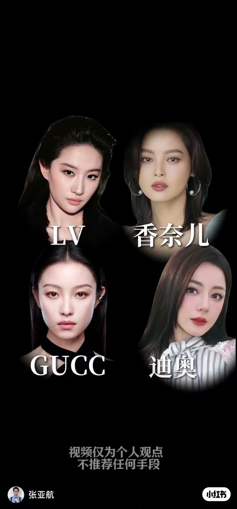
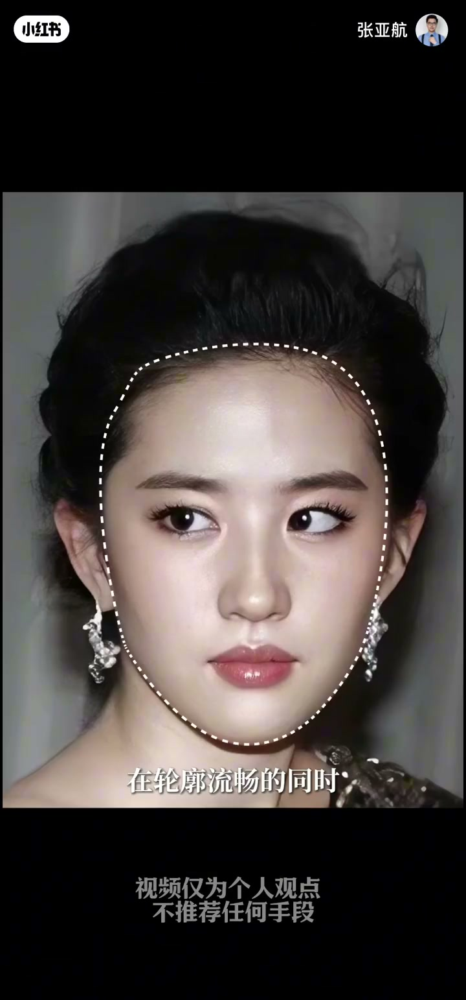
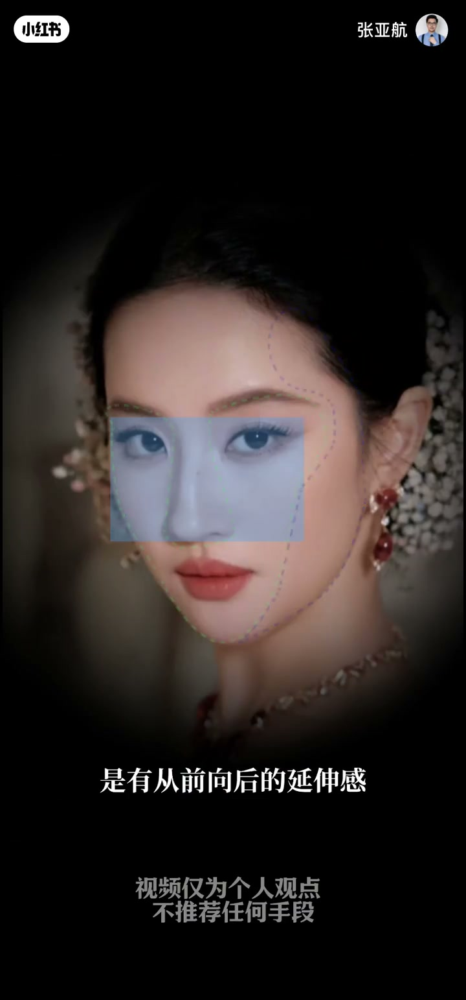
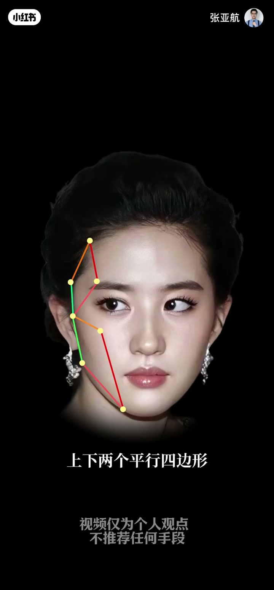
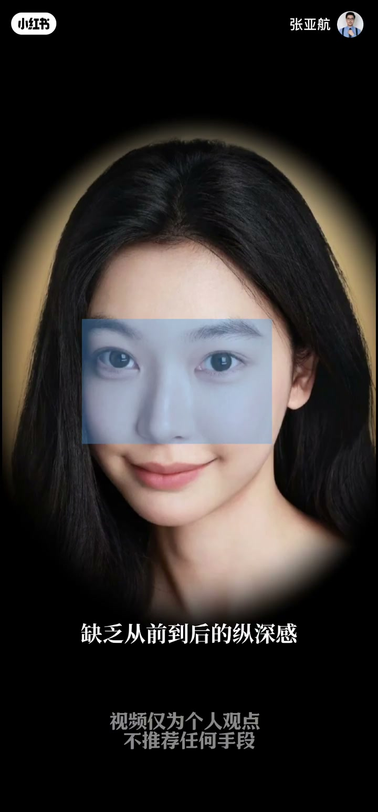
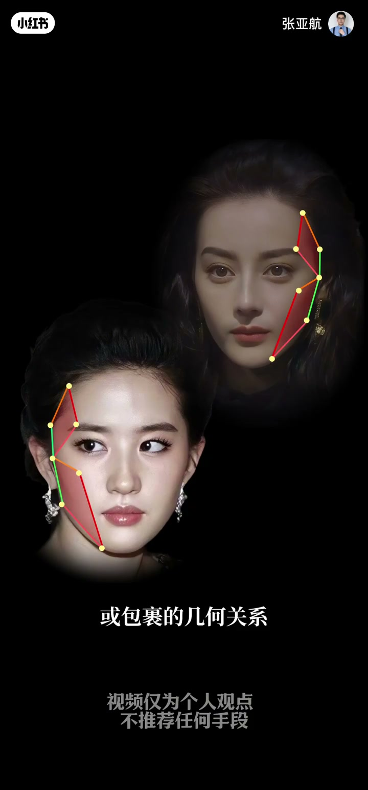
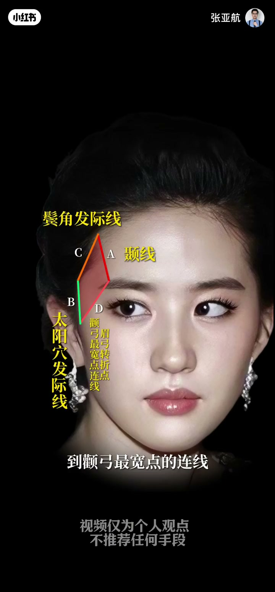
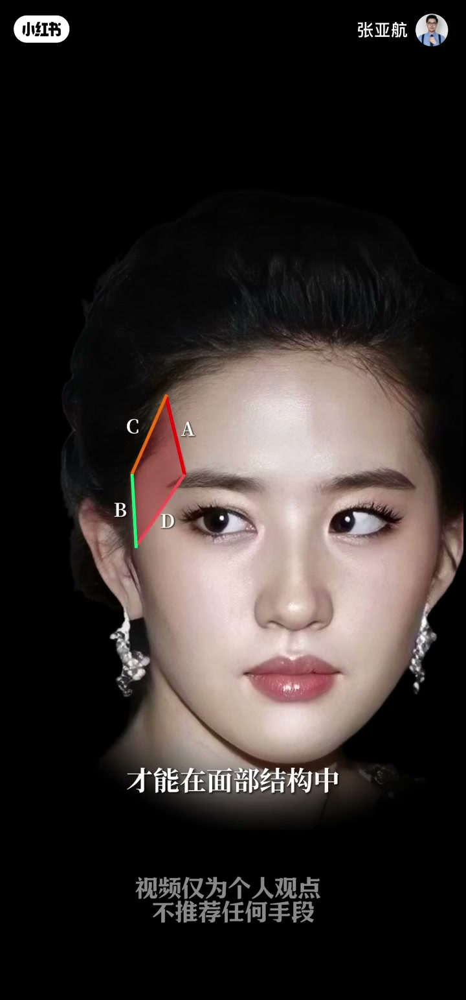
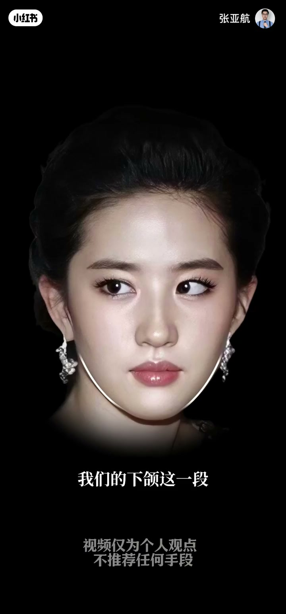

内容要点
一段 3 分 05 秒的面部美学分析。顶奢品牌（LV、香奈儿、古驰、迪奥）钟爱某些脸不是因为咖位大，而是因为「空间透视」：高级的好看=轮廓流畅+面部有从前向后的延伸感+横平竖直的骨骼结构。前后上下的骨骼高点分别构成上下两个平行四边形——上面部（颞线、太阳穴发际线、鬓角发际线、眉弓-颧弓连线）与下面部（颧弓后段、颧骨表现点、下颌拐点、下颌-颏部转折点），这正是电影脸高级感的来源。淡系美女只有平面包裹关系、缺乏纵深，上镜脸摊成一片。菱形脸/高颧骨是平行四边形缺失或AB不平行；错误审美只加宽太阳穴，得到圆滚滚无结构的上庭。下颌要由两条线构成（有向后转折），才能有延伸感。结论：下庭圆润=二维局限，头重脚轻不符合顶奢审美；把专业的事交给专业的人。
知识结构
LV 香奈儿古驰迪奥钟爱某些脸，不是因为咖位，而是面部美学。
轮廓流畅+面中区到颊后区延伸感+横平竖直结构。
骨骼高点构成上下两个平行四边形→电影脸；淡系美女平面包裹上镜摊开。
A颞线 B太阳穴发际线 C鬓角发际线 D眉弓-颧弓连线；AB平行CD平行。
菱形脸/高颧骨=平行四边形缺失；只加宽太阳穴=圆滚滚上庭。
颧弓后段、颧骨表现点、下颌拐点、下颌-颏部转折点；下颌两条线才有转折。
下庭圆润=二维局限；反对头重脚轻；专业的事交给专业的人。
顶奢品牌钟爱的脸=有空间透视的电影脸：轮廓流畅之外，面部还有从前到后的延伸感与横平竖直的骨骼结构，其核心是上下两个平行四边形（上面部颞线/太阳穴发际线/鬓角发际线/眉弓-颧弓连线，下面部颧弓后段/颧骨表现点/下颌拐点/下颌-颏部转折点）。淡系平面脸缺乏纵深上镜摊开；菱形脸高颧骨=平行四边形缺失或AB不平行；错误审美只加宽太阳穴得不到体块；下颌必须两条线（向后转折）才有延伸感。变美不是修平一切，而是重建体块几何关系。
00:00-00:15顶奢偏爱之谜：不是咖位，是面部美学
LV、香奈儿、古驰、迪奥，这些顶奢品牌为何独独钟爱于他们？作者否定咖位论：「只是因为咖位大吗？今天从面部美学的角度拆解。」
真正的原因藏在面部的空间透视里——品牌需要一张能承载更大市场的「电影脸」。

00:15-00:28高级的好看=轮廓流畅+空间透视
作者直接对比两种好看：「很多人以为的好看是这样的，而高级的好看是这样的。」
高级感的定义是叠加的：「在轮廓流畅的同时，面部是有空间透视的」——面中区到后方的颊后区有从前向后的延伸感，脸上也有横平竖直的结构。
关键词：空间透视。不是平面上的流畅，而是立体上的纵深。


00:28-00:54两个平行四边形=电影脸的核心机制
「前后上下的骨骼高点，分别构成了上下两个平行四边形。而电影脸正是因为这两个平行四边形的存在，才有了轮廓流畅自然高级的面部结构。」
反面对照是淡系美女：「只有左右宽窄的平面包裹关系，缺乏从前到后的纵深感，结构模糊不清……上镜时脸摊成一片。」
同一张脸，二维是好看，三维才是高级——这就是顶奢品牌选人的底层逻辑。


00:54-01:19上面部平行四边形：ABCD 四条线
空间透视的前提是面部高点：「比如眉弓、颧骨、下颌角等。」高点不是孤立的，「而是由点、线、面构成了平行或包裹的几何关系」。
上面部平行四边形由四条线构成：A=颞线，B=太阳穴发际线，C=鬓角发际线，D=从眉弓转折点到颧弓最宽点的连线。
把几个高点的平行线连起来，就得到面部两个平行四边形之一。


01:19-01:55平行法则与失衡脸：菱形脸、高颧骨
判定法则很硬：「A要和B趋近于平行，C和D要平行，这两组线条才能在面部结构中呈现出一前一后、一宽一窄的空间关系。」
失衡脸分析：「菱形脸或者高颧骨的人，往往是这个平行四边形直接缺失，或者是A和B构不成平行关系，就会导致颧骨成为上面部最宽点。」
错误审美警示：不懂得面部体块的人「会让你直接加宽太阳穴，却不模拟出这个平行四边形的体块关系」，结果「只会得到一个圆滚滚、没有结构关系和光影关系的上庭」。

01:55-02:35下面部平行四边形：下颌的两条线
下面部的平行四边形由颧弓后段、颧骨表现点、下颌拐点、下颌与颏部转折点构成。下面部缺失的人，通常是这个平行四边形出了问题。
核心细节：「我们的下颌这一段是由两条线构成的，在变美的时候不能处理成一条线，否则就会变成没有向后转折的下庭。」
两条线处理得当，面部会呈现从前向后的延伸感——这正是空间透视的落点。

02:35-03:05结论：二维局限 vs 顶奢审美
「当你的下庭同样出现圆润的形态，美就会局限在二维平面中，无法向大屏幕和更大的市场更进一步。」
作者澄清边界：「并不是否定下巴尖、下半张脸窄的美，而是上下失衡、头重脚轻的脸，不符合电影脸和顶奢的审美体系。」
最后的价值观落点：「不具有面部体块审美体系的人，会在变美路上交很多学费，而有结果的人只做一件事——把专业的事交给专业的人。」
完整转录（84段）
以下文本由 Whisper medium 模型自动转录，可能存在少量识别误差，已尽可能修正。
LV、香奈儿、库茨、迪奥
这些顶遮品牌为何独独钟爱于他们
只是因为咖位大吗?
今天从面部美学的角度拆解
为什么他们的脸就能深受奢牌的喜爱
让品牌频频为他们站台
拓展更大的市场
很多人以为的好看是这样的
而高级的好看是这样的
在轮廓流畅的同时
面部是有空间透视的
面部的面中区到后方的夹后区
是有从前向后的延伸感
脸上也有横屏竖直的结构
这些前后上下的骨骼高点
分别构成了上下两个平行四边形
而电影脸正是因为这两个平行四边形的存在
才有了轮廓流畅自然高级的面部结构
而淡系美女
只有左右宽窄的平面包裹关系
缺乏从前到后的重生感
结构模糊不清
即使看起来是轮廓流畅的好看
也会因为缺乏面部高点和前后的紧身
上镜时脸摊成一片
那什么样的脸是具有空间透视感的呢?
首先就是要有面部高点
比如眉弓、颧骨、下和角等
这些高点并不是孤立存在
而是由点、线、面
构成了平行或包裹的几何关系
我把这几个高点形成的平行线连接在一起
就形成了面部的这两个平行四边形
上面部的平行四边形由ABCD四条线构成
A是我们的捏线
B是太阳穴发际线
C是鬓角发际线
D是从眉弓转折点到颧弓最宽点的连线
A要和B趋近于平行
C和D要平行
这两组线条才能在面部结构中呈现出
一前一后、一宽一窄的空间关系
菱形脸或者高颧骨的人
往往是这个平行四边形直接缺失
或者是A和B构不成平行关系
就会导致颧骨成为上面部最宽点
不懂得面部体块的人
会让你直接加宽太阳穴
却不模拟出这个平行四边形的体块关系
也没有意识到
鬓角发际线与太阳穴发际线之间存在转折关系
按照错误的审美
你只会得到一个圆滚滚
没有结构关系和光影关系的上停
下面部的平行四边形
就是我之前在这条视频里讲的平行四边形
由我们的
拳弓后段、拳骨表现点、下和拐点
下和与磕部转折点构成E
平行于FG、平行于H
下面部缺失的人
通常是因为这个平行四边形出现了问题
而且大多数是这两条线出现了不规整的问题
要注意的是
我们的下和这一段
是由两条线构成的
在变美的时候
不能处理成一条线
否则就会变成没有向后转折的下停
当这两条线处理得当时
面部会呈现从前向后的延伸感
当你的下停同样出现圆润的形态
美就会局限在二维平面中
无法向大萤幕和更大的市场更进一步
这里要说明一个点
并不是否定下巴尖、下半张脸窄的美
而是上下失衡、头重脚轻的脸
不符合电影脸和顶摄的审美体系
不具有面部体块审美体系的人
会在变美路上交很多学费
而有结果的人只做一件事
把专业的事交给专业的人
我是张亚航
关注我学会审美再谈变美